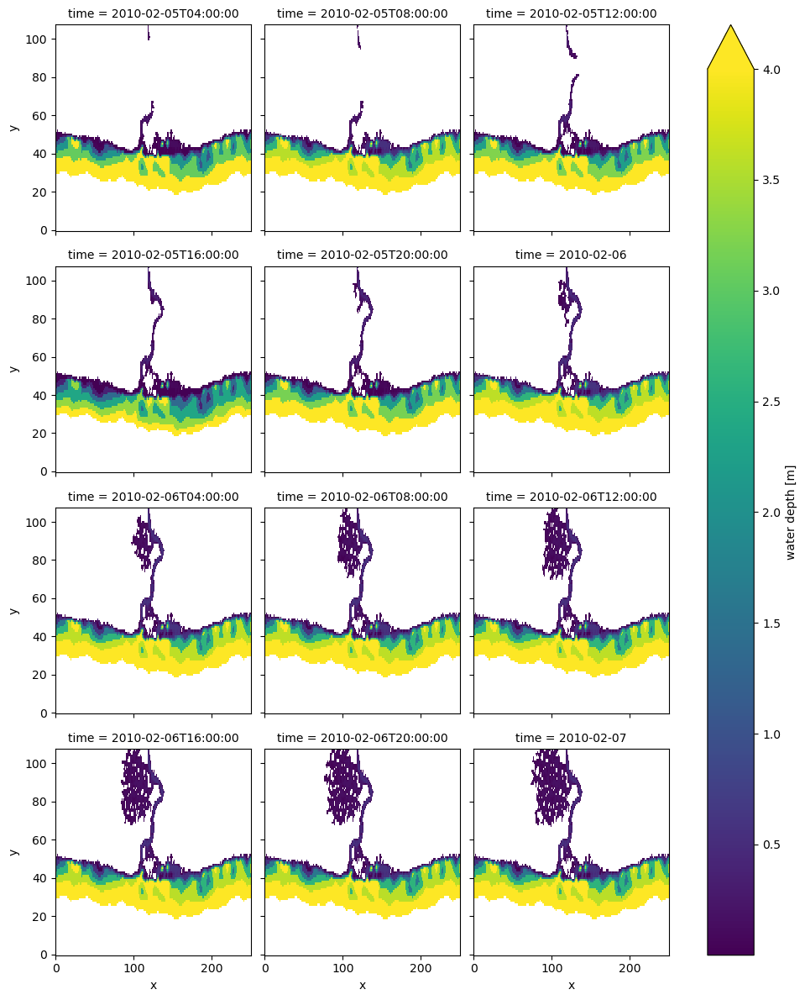

Tip
Sfincs results: animation#
The example used in this notebook is based on a regular SFINCS model, i.e. no subgrid tables are used. In the absence of the subgrid tables, SFINCS computes the water depth by simply substracting the bed levels from the water levels. The (maximum) water depth h(max) is stored in the NetCDF output (sfincs_map.nc).
How to derive maximum water depths for a model including subgrid tables is explained in a notebook about maximum water depths. A similar downscaling approach should be applied while making animations of a subgrid model!
[1]:
# import dependencies
import numpy as np
import matplotlib.pyplot as plt
from hydromt_sfincs import SfincsModel
We use the cartopy package to plot maps. This packages provides a simple interface to plot geographic data and add background satellite imagery.
Read model results#
The model results in sfincs_map.nc are saved as in a staggered grid format, see SGRID convention. Here we show how to retrieve the face values and translate the dimensions from node indices (m, n) to (x, y) coordinates in order to plot the results on a map.
[2]:
sfincs_root = "sfincs_compound" # (relative) path to sfincs root
mod = SfincsModel(sfincs_root, mode="r")
2026-05-22 14:54:37,624 - hydromt.model.model - model - INFO - Initializing sfincs model from hydromt_sfincs (v2.0.0rc2).
2026-05-22 14:54:37,625 - hydromt.model.model - model - WARNING - No region component found in components.
[3]:
# we can simply read the model results (sfincs_map.nc and sfincs_his.nc) using the read_results method
mod.output.read()
2026-05-22 14:54:38,054 - hydromt.hydromt_sfincs.components.output - output - WARNING - Replacing result: inp
2026-05-22 14:54:38,055 - hydromt.hydromt_sfincs.components.output - output - WARNING - Replacing result: msk
2026-05-22 14:54:38,055 - hydromt.hydromt_sfincs.components.output - output - WARNING - Replacing result: zb
2026-05-22 14:54:38,056 - hydromt.hydromt_sfincs.components.output - output - WARNING - Replacing result: zs
2026-05-22 14:54:38,057 - hydromt.hydromt_sfincs.components.output - output - WARNING - Replacing result: h
2026-05-22 14:54:38,057 - hydromt.hydromt_sfincs.components.output - output - WARNING - Replacing result: zsmax
2026-05-22 14:54:38,057 - hydromt.hydromt_sfincs.components.output - output - WARNING - Replacing result: hmax
2026-05-22 14:54:38,058 - hydromt.hydromt_sfincs.components.output - output - WARNING - Replacing result: total_runtime
2026-05-22 14:54:38,058 - hydromt.hydromt_sfincs.components.output - output - WARNING - Replacing result: average_dt
2026-05-22 14:54:38,058 - hydromt.hydromt_sfincs.components.output - output - WARNING - Replacing result: status
Plot instantaneous water depths#
[4]:
# h from sfincs_map contains the water depths for each cell face
# here we plot the water level every 4th hour
h = mod.output.data["h"].where(mod.output.data["h"] > 0)
h.attrs.update(long_name="water depth", unit="m")
h.sel(time=h["time"].values[4::4]).plot(col="time", col_wrap=3, vmax=4)
[4]:
<xarray.plot.facetgrid.FacetGrid at 0x7fadb47ee190>

[5]:
# point_h contains the water depths at the sfincs.obs gauge locations
# see mod.plot_basemaps (or next figure) for the location of the observation points
h_point = mod.output.data["point_h"].rename({"stations": "station_id"})
h_point["station_id"] = h_point["station_id"].astype(int)
# plot the water level at the first gauge
_ = h_point.sel({"station_id": 1}).plot.line(
x="time",
)

Create animation#
An animation is also simple to make with matplotlib.animation method. Here we add the surface water level in blue colors next to the overland flood depth with viridis colormap.
[6]:
# mask water depth
hmin = 0.05
da_h = mod.output.data["h"].copy()
da_h = da_h.where(da_h > hmin).drop("spatial_ref")
da_h.attrs.update(long_name="flood depth", unit="m")
[7]:
# create hmax plot and save to mod.root/figs/sfincs_h.mp4
# requires ffmpeg install with "conda install ffmpeg -c conda-forge"
from matplotlib import animation
step = 1 # one frame every <step> dtout
cbar_kwargs = {"shrink": 0.6, "anchor": (0, 0)}
def update_plot(i, da_h, cax_h):
da_hi = da_h.isel(time=i)
t = da_hi.time.dt.strftime("%d-%B-%Y %H:%M:%S").item()
ax.set_title(f"SFINCS water depth {t}")
cax_h.set_array(da_hi.values.ravel())
fig, ax = mod.plot_basemap(
fn_out=None,
variable="",
bmap="sat",
plot_bounds=False,
figsize=(11, 7),
zoomlevel=12,
)
cax_h = da_h.isel(time=0).plot(
x="xc", y="yc", ax=ax, vmin=0, vmax=3, cmap=plt.cm.viridis, cbar_kwargs=cbar_kwargs
)
plt.close() # to prevent double plot
ani = animation.FuncAnimation(
fig,
update_plot,
frames=np.arange(0, da_h.time.size, step),
interval=250, # ms between frames
fargs=(
da_h,
cax_h,
),
)
# to save to mp4
# ani.save(join(mod.root, 'figs', 'sfincs_h.mp4'), fps=4, dpi=200)
# to show in notebook:
from IPython.display import HTML
HTML(ani.to_html5_video())
---------------------------------------------------------------------------
AttributeError Traceback (most recent call last)
Cell In[7], line 16
12 ax.set_title(f"SFINCS water depth {t}")
13 cax_h.set_array(da_hi.values.ravel())
14
15
---> 16 fig, ax = mod.plot_basemap(
17 fn_out=None,
18 variable="",
19 bmap="sat",
File ~/work/hydromt_sfincs/hydromt_sfincs/hydromt_sfincs/sfincs.py:584, in SfincsModel.plot_basemap(self, fn_out, variable, shaded, plot_bounds, plot_region, plot_geoms, bmap, zoomlevel, figsize, geom_names, geom_kwargs, grid_kwargs, legend_kwargs, **kwargs)
582 comp = self.components[component]
583 # vector geometries have data as gpd.GeoDataFrame
--> 584 if isinstance(comp.data, gpd.GeoDataFrame):
585 gdf = comp.data
586 if not gdf.empty:
File ~/work/hydromt_sfincs/hydromt_sfincs/hydromt_sfincs/components/forcing/boundary_conditions.py:53, in SfincsBoundaryBase.data(self)
48 """
49 Get the internal xarray dataset/dataarray containing point timeseries
50 and geometry information. If not yet initialized, `_initialize()` is called.
51 """
52 if self._data is None:
---> 53 self._initialize()
54 assert self._data is not None
55 return self._data
File ~/work/hydromt_sfincs/hydromt_sfincs/hydromt_sfincs/components/forcing/boundary_conditions.py:67, in SfincsBoundaryBase._initialize(self, skip_read)
65 self._data = xr.Dataset()
66 if self.root.is_reading_mode() and not skip_read:
---> 67 self.read()
File ~/work/hydromt_sfincs/hydromt_sfincs/hydromt_sfincs/components/forcing/water_level.py:58, in SfincsWaterLevel.read(self, format)
55 format = "asc"
57 if format == "asc":
---> 58 gdf = self.read_boundary_points()
59 # Check if there are any points
60 if not gdf.empty:
File ~/work/hydromt_sfincs/hydromt_sfincs/hydromt_sfincs/components/forcing/water_level.py:94, in SfincsWaterLevel.read_boundary_points(self, filename)
89 raise FileNotFoundError(
90 f"Water level boundary points file not found: {abs_file_path}"
91 )
93 # Read bnd file
---> 94 gdf = utils.read_xy(abs_file_path, crs=self.model.crs)
95 return gdf
File ~/work/hydromt_sfincs/hydromt_sfincs/hydromt_sfincs/utils.py:233, in read_xy(fn, crs)
218 def read_xy(fn: Union[str, Path], crs: Union[int, CRS] = None) -> gpd.GeoDataFrame:
219 """Read sfincs xy files and parse to GeoDataFrame.
220
221 Parameters
(...) 231 GeoDataFrame with point geomtries
232 """
--> 233 gdf = open_vector(fn, crs=crs, driver="xy")
234 gdf.index = np.arange(0, gdf.index.size, dtype=int) # index starts at 0
235 return gdf
File /usr/share/miniconda3/envs/hydromt-sfincs/lib/python3.11/site-packages/hydromt/readers.py:663, in open_vector(path, driver, crs, dst_crs, bbox, geom, assert_gtype, predicate, **kwargs)
661 driver = driver if driver is not None else str(path).split(".")[-1].lower()
662 if driver in ["csv", "parquet", "xls", "xlsx", "xy"]:
--> 663 gdf = open_vector_from_table(path, driver=driver, **kwargs)
664 # drivers with multiple relevant files cannot be opened directly, we should pass the uri only
665
666 else:
667 if driver == "pyogrio":
File /usr/share/miniconda3/envs/hydromt-sfincs/lib/python3.11/site-packages/hydromt/readers.py:760, in open_vector_from_table(path, driver, x_dim, y_dim, crs, **kwargs)
758 raise IOError(f"Driver or extension {driver} unknown for vector table.")
759 # infer points from table
--> 760 df.columns = [c.lower() for c in df.columns]
762 if x_dim is None:
763 for dim in raster.XDIMS:
File /usr/share/miniconda3/envs/hydromt-sfincs/lib/python3.11/site-packages/hydromt/readers.py:760, in <listcomp>(.0)
758 raise IOError(f"Driver or extension {driver} unknown for vector table.")
759 # infer points from table
--> 760 df.columns = [c.lower() for c in df.columns]
762 if x_dim is None:
763 for dim in raster.XDIMS:
AttributeError: 'int' object has no attribute 'lower'